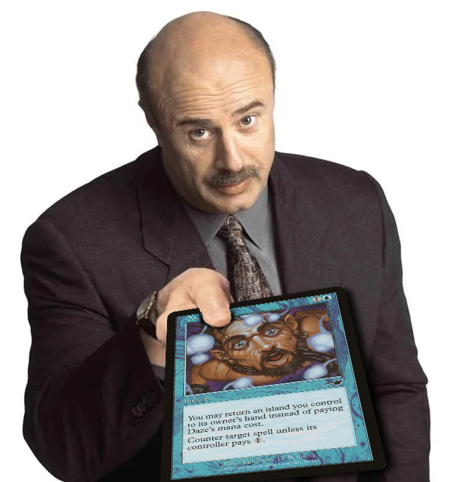

Parker Wunderlich Location: Washington, D.C. Email: ptwund@gmail.com Resume: resume.daze.lol GitHub: github.com/oomlie LinkedIn: linkedin.com/in/parkerwunderlich Domain: daze.lol
daze.lol
├── Portfolio & Web
│ └── resume.daze.lol Executive Resume & Web Portfolio (RenderCV)
├── AI & Intelligence
│ ├── route.daze.lol CLI Proxy API — Multi-account AI model gateway & load balancer
│ ├── crawl.daze.lol Firecrawl API — Automated web scraping & structured extraction
│ ├── halo.daze.lol DeepSeek Harness — Web interface & local LLM inference gateway
│ └── search.daze.lol SearXNG — Privacy-focused metasearch engine
├── Code & DevOps
│ ├── plan.daze.lol Plane — Agile project management & issue tracking platform
│ ├── knot.daze.lol Tangled Knot — Decentralized Git collaboration on ATProto (what is Tangled?)
│ ├── spindle.daze.lol Tangled Spindle — CI/CD build runner for Tangled repositories
│ └── knot-ssh.daze.lol Secure SSH gateway for Tangled git transport
├── Storage & Data
│ ├── drive.daze.lol SFTPGo — Cloud storage portal, media server & file manager
│ └── drop.daze.lol Ephemeral File Host — Automated temporary upload gateway
│ └── curl -Ffile=@file.txt https://drop.daze.lol/
├── Federated Identity & Social
│ ├── pds.daze.lol ATProtocol PDS — Federated Personal Data Server
│ ├── hope.daze.lol Bluesky PDS — Isolated personal Bluesky identity node
│ └── tasks.daze.lol ATProtocol Task Board — Distributed task management protocol
└── Shortcuts & Utilities
├── fish.daze.lol → MTGGoldfish market analytics
├── mox.daze.lol → Moxfield deckbuilder platform
└── scryphil.daze.lol Scryfall card search utility
Host Node: Dedicated NixOS Linux host ("halo") powered by AMD Strix Halo hardware.
Container Runtime: Rootless Podman container orchestration and systemd user daemons.
Edge Ingress: Cloudflare Tunnel (Zero Trust) with automated edge SSL/TLS termination.
Access Control: Cloudflare Access SSO identity integration enforcing granular policy rules.
Observability: Centralized system log aggregation, daemon monitoring, and health checks.
Data Persistence: Isolated volume mounts, automated backup routines, and encrypted data stores.
Personal systems infrastructure. Hosted on daze.lol for personal use.